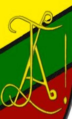

Dies Natalis: 8 oktober 2001
Oprichtsters: Alice Hombrouck(=Smodder); Joy Bouts(=Bakkie); Liesbet Blancaert(=klomp)
Ontgroend: februari 2005
Kleuren: geel-groen-rood
Saltator(=danser), Orator(=redenaar), Sodalis(=drinkbroeder)
Clublied: gebasseerd op ‘Clementine’
Schild & monogram:

Verklaring kleuren:
Op een zatte avond kwamen Smodder en Bakkie op het idee om een koe om te duwen. Toen puntje bij paaltje kwam kreeg Smodder schrik dat de koe op hun zou vallen en dus besloten ze in plaats daarvan maar een schaap om te duwen. Uit respect voor het schaap hebben ze dat schaap gekozen voor het schild.
Klomp had op het eerste schild een steen getekend maar deze had ze te dicht tegen de poot van het schaap gezet waardoor de steen meer leek op een komp (vandaar haar naam). Op het nieuwe schild staat deze steen niet meer.
SOS had bij de oprichting de kleuren Rood-Geel-Groen wat dezelfde kleuren waren als het DHSV (=Diepenbeeks Hoogstudenten Verbond wat) dat toen niet meer bestond. In het ontgroeningsjaar van SOS werd echter het DHSK (= Diepenbeeks-Hasselts SeniorenKonvent) opgestart dat terug deze kleuren nam. De ontgroening van SOS mocht enkel gebeuren onder de voorwaarde dat we de kleuren veranderde en dus zijn de kleuren één plaats naar links opgeschoven. Rood –Geel – Groen werd Geel – Groen – Rood
Fristi: Zij was senior maar werd afgezet omdat ze verkondigde dat SOS een holebi club is, haar tieten altijd liet zien en het verder nog meer begaaide. Nadat ze afgezet was deed ze hier gewoon mee verder en werd ze uit de club gezet.
Nwoar: Zij heeft heel de club belogen en bedrogen en enorm veel problemen veroorzaakt. Uit noodzaak is ze hierom uit de club gezet.
| Club | Samenstelling | Kleuren |
|---|---|---|
| Ambifaarke | gemengd | rood-geel-rood |
| Amicitia aeterna | vrouwen | blauw-paars-blauw |
| Astoria | mannen | zwart-rood-zwart |
| Bokkereyers | mannen | paars-geel-paars |
| Caeruleus | gemengd | blauw-groen-blauw |
| Carpe diem | mannen | blauw-wit-blauw |
| Dionysia | vrouwen | groen-geel-groen |
| Hockey* | mannen | zwart-grijs-zwart |
| Klamme hand | mannen | groen-bruin-groen |
| Phercolica | gemengd | groen-oranje-groen |
| Reginae noctis | vrouwen | wit-fuchsia-zwart |
| Scaf** | gemengd | wit-paars-wit |
| Sidus clarum puellarum*** | vrouwen | rood-groen-rood |
| Saltator Orator Sodalis | gemend | geel-groen-rood |
| Tyl uylenspiegel | mannen | wit-groen-wit |
SK: Seniorenkonvent: opvolger van het DHSK, nog steeds actief.
LOSO: Limburgs Overkoepelend Studentenorgaan
DHSV: Diepenbeeks hoogstudenten verbond
Opgericht 1990
Kleuren: Rood-geel-groen
DHSK: Diepenbeeks-Hasselts Seniorenkonvent.
Opgericht: 13 maart 2002
Opvolger van het DHSV
Boves Luci (mannenclub)
Kleuren: oranje-zwart-oranje
Oprichting: 12 februari 1974
Verdwenen 2012 (2004 al uit dhsk)
Hasaluth (mannenclub)
Kleuren: groen-wit
Oprichting: 1996
Erkenning 2002
Verdwenen 2007
De Zandloper
Afkomstig uit mol, maar toch herkend door DHSV
Kleuren: Geel-Rood-Geel
Zat de clubcantussen vroeger voor en heeft dus SOS ontgroend.
De Zandloper was een club die eigenlijk was overgekomen was uit Mol en ontstaan was in het middelbaar. Maar toch is erkend geraakt door het DHSK. Zij zaten vooraan bij de clubcantus toen SOS ontgroend werd. => eigenlijk heeft de Zandloper SOS ontgroend.
• Tudtsen: lans was eens met femke tudts in bed beland, hij en femke tudts was heel lekker aant seksen en vlak voor lans klaar kwam vroeg ze: “eih, nu vrijen wij toch éh?” en lans wouw gewoon klaarkomen en zei natuurlijk natuurlijk jaja blablabla. Dus het betekend: alles doen om klaar te komen of om een meiske in u bed te krijgen
• Da buffert nie: cosmo, rée, hagar en wall waren een films, of een filmpje aant kijken op internet op kot bij wall en het filmpje wouw niet bufferen, eventjes later deed nog iets niet gelijk het moest enn van daar komt het buffert nie .. das het betekend: als iets niet werkt zoals het moet, zeg je : da buffert niet
• “Voor sos voor vrijheid en voor recht” bij de brabaconnes..
• onze petjes zijn fout, de bovenkant zou helemaal geel moete zijn .. maar dat is lelijk met een geen monogram op
• Een Loupke doen: in u lief klaarkomen en uw zaad er dan uit lekken. En dan doorgeven aan uw lief…
• Badmat: Wablieft wou Hagar eerst Badmat noemen omdat hij een Badmat op zijn rug droeg op de doop.
• Doop: De doop wordt nog maar enkele jaren in het kapermolen-park gehouden. Daarvoor werd dit in diepenbeek gedaan
• Muffins: 2 jaar gelden (denk ik) op ontgroeningsweekend hadden ze muffins gegeten en was iedereen hoerekrom (spreek uit zoals Dour dit zou doen). Rée kon niet meer praten enkel nog brabbelen, Cresch hoorde Rée en durfde niet meer praten en Braajt voeierde Hagar steeds papierjtes en zei dat het snoepjes waren
• Legendarische scheve Cresch-foto: genomen na een marktcantus in het kapermolenpark (denkik). Hilariteit alom.
• SILENTIUUUUM! Wablieft?: Als er op een cantus Silentium werd geroepen moest Silly steeds drinken. En dan zei hij steeds: “Wablieft?” Hierdoor moest wablieft ook drinken. (als hij aanwezig was uiteraard)
• Suur en Lans zijn ooit uit de club gegaan (wegens geen tijd en problemen met ouders). Maar zijn achteraf toch terug gekomen en ontgroend.
• Reesauto: Auto van Ree
• Posjmobiel: Auto van Posj
• Kamion: Auto van Kami
• Fluffie geen prosenior: ze was meer bezig met SOS erkend te krijgen bij het DHSK, maar gaf minder aandacht aan de club intern. Dit is haar niet in dank afgenomen.
• 8ste strofe: geschreven door Schwung en Fluffie
• Verbroederd met: Scaf, Sidus, Tyl en de Bokkerijers.
• Ambilans: Scheve lans (van ambiance)
• Ward vrijt, maar don niet: Dat zij hij altijd...
• Clubcafe: dit was de eerste 6 jaar de ploeg in Diepenbeek, samen met Klamme Hand. In Cresch haar jaar was dit in de Mystral. In het jaar van Rée hing het schild op in de Ambi tot begin dit jaar (sluiting).
• Foute Petjes: bovenkant moet geel zijn met rood monogram, maar dit was niet zo mooi. Hierdoor lijken ze op die van het ambifaarke of sidus.
• Coeurke doen: Gaan zitten en denken dat je op het wc zit. En bijgevolg in uw broek pissen.
• Smodder Klomp en Bakkie kennen elkaar van op kot.
• Lievelingslied Duvel: swing low, sweet charrot
• Clementine: pg 544
• 3 schruimtrambroers
• A a a valeta studia achterstevoor zingen
• My bonnie is nu my hopla
• Beat heeft een voorval met een wc-borstel zijn tanden te hebben gepoetst